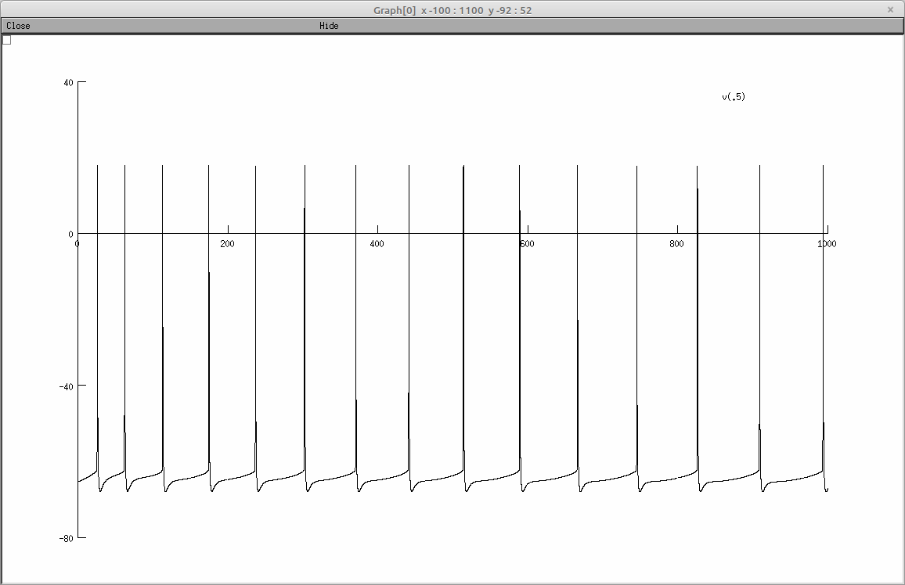

This is the README for the Cerebellar Golgi cell models code for the paper: "Cerebellar Golgi cell models predict dendritic processing and mechanisms of synaptic plasticity" PLos Computational Biology Implementation done by Stefano Masoli in Python3/Neuron. Stefano.masoli@unipv.it Abstract The Golgi cells are the main inhibitory interneurons of the cerebellar granular layer. Although recent works have highlighted the complexity of their dendritic organization and synaptic inputs, the mechanisms through which these neurons integrate complex input patterns remained unknown. Here we have used 8 detailed morphological reconstructions to develop multicompartmental models of Golgi cells, in which Na, Ca, and K channels were distributed along dendrites, soma, axonal initial segment and axon. The models faithfully reproduced a rich pattern of electrophysiological and pharmacological properties and predicted the operating mechanisms of these neurons. Basal dendrites turned out to be more tightly electrically coupled to the axon initial segment than apical dendrites. During synaptic transmission, parallel fibers caused slow Ca-dependent depolarizations in apical dendrites that boosted the axon initial segment encoder and Na-spike backpropagation into basal dendrites, while inhibitory synapses effectively shunted backpropagating currents. This oriented dendritic processing set up a coincidence detector controlling voltage-dependent NMDA receptor unblock in basal dendrites, which, by regulating local calcium influx, may provide the basis for spike-timing dependent plasticity anticipated by theory. Requirement: The models used in the paper were simulated with Python3.6 and NEURON 7.8. They can be used with Python3.8 and NEURON 8 The model uses NEURON multisplit to distribute automatically the calculation on all the available cores. Usage instructions: Download and extract the archive. Under Linux/Unix: Change directory to "Golgi_cell_2020" folder. Each model is self contained into a specific directory. Morphology_1 and Morphology_2. In each directory, run nrnivmodl ./mod_files to compile the mod files. Each model is provided with 4 protocols: 1) Spontaneous firing Run nrngui -python /protocols/01_SS.py 2) Positive current injections, I/O relationship Run nrngui -python /protocols/02_currents_IO.py 3) Negative current injections, sag and rebound Run nrngui -python /protocols/03_negative_currents.py 4) Positive current injections, I/O relationship Run nrngui -python /protocols/04_Syn_burst.py The number of synapses, types, bursts frequency, dendritic location and currents can be modified into the protocol itself. The following screenshot are generated by the first protocol: Regular firing  Attention: The model does not work with variable time step! Not tested under NEURON for windows or MAC OS. If you would like more help please refer to: https://senselab.med.yale.edu/ModelDB/NEURON_DwnldGuide.cshtml